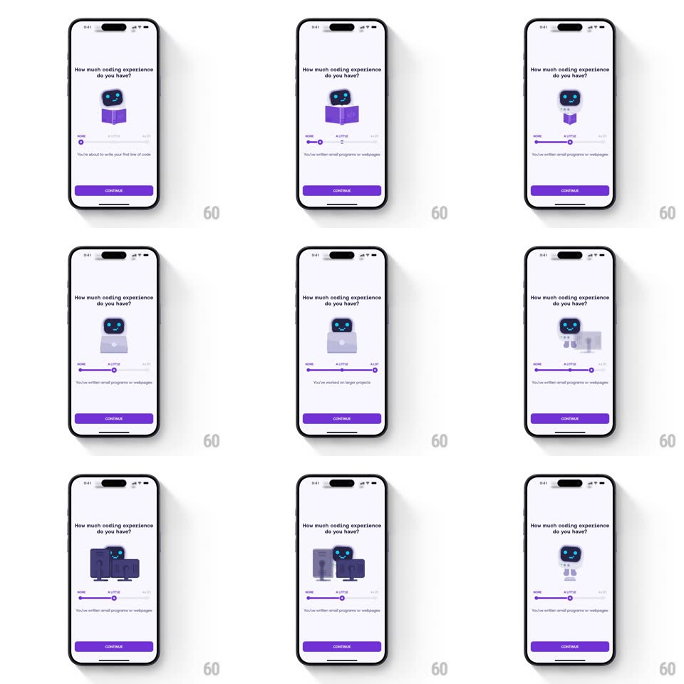

Media
Frame-by-frame

Rebuild this interaction 1:1: Mimo's experience slider - dragging between NONE, A LITTLE, and A LOT swaps the robot mascot's illustration state (at a laptop, reading a purple book, behind server racks) and the caption beneath the slider.

Rebuild this interaction 1:1: Mimo's experience slider - dragging between NONE, A LITTLE, and A LOT swaps the robot mascot's illustration state (at a laptop, reading a purple book, behind server racks) and the caption beneath the slider.
## Integration
Integration: stack-agnostic spec - springs given as stiffness/damping, timed motions as duration + curve; map every value to your framework and animation library of choice.
## Scene
Onboarding screen: "How much coding experience do you have?", a robot mascot illustration center, a three-stop slider (NONE / A LITTLE / A LOT), a caption line ("You're about to write your first line of code" / "You've written small programs or webpages" / "You've worked on larger projects"), purple Continue button.
## Motion spec
Pattern: stop-slider driving mascot states.
- Drag the thumb: track fills purple behind it; ticks at the three stops give haptic detents.
- Crossing a stop: the mascot illustration crossfades to the matching state with a 60px vertical drift (250ms ease-out) - old illustration slides down + out, new one slides up + in; the robot's expression/props change per level.
- Release snaps the thumb to the nearest stop (spring ~400/26, ~200ms); the caption crossfades (200ms) once settled.
- The robot idles with a tiny hover (translateY ±4px, 2s loop) in every state.
- Continue stays enabled throughout (default NONE preselected).
## Calibration
- Illustration swaps happen DURING drag at stop crossings, not on release - the feedback is live.
- Three stops only; no continuous in-between states.
## Reduced motion
Illustrations crossfade in place; thumb snaps without spring.
## Don't miss
- The mascot is the same robot in every state - continuity matters (same face, new context).
- Slider labels (NONE / A LITTLE / A LOT) are fixed; captions below change.